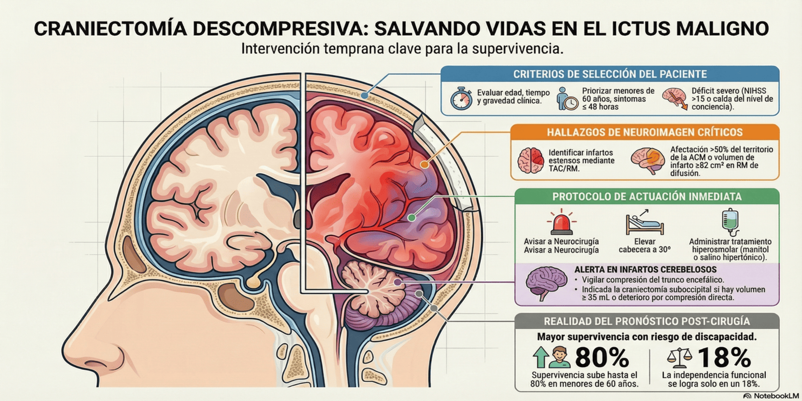

La craniectomía descompresiva es una intervención quirúrgica indicada en el edema cerebral maligno secundario a un ictus isquémico extenso. Su objetivo es reducir el efecto de masa y la presión intracraneal (PIC), salvando la vida del paciente, aunque con un riesgo aumentado de discapacidad residual.
Indicaciones clínicas y radiológicas
La decisión de intervenir se basa en una combinación de criterios clínicos y de neuroimagen. Debe considerarse la craniectomía si se cumplen los siguientes parámetros:
- Edad: preferentemente en menores de 60 años, ya que reduce la mortalidad a la mitad y aumenta la probabilidad de independencia funcional, aunque puede valorarse individualmente en mayores dada la reducción de la mortalidad observada.
- Criterios clínicos:
- Inicio de los síntomas ≤ 48 horas (máximo beneficio de la intervención).
- Déficit neurológico basal severo (típicamente NIHSS >15).
- Deterioro del nivel de conciencia atribuible al edema (caída ≥1 punto en ítem 1a o ≥4 puntos en total del NIHSS).
- Criterios radiológicos:
- Signos de infarto extenso que afecta a más del 50% del territorio de la arteria cerebral media (ACM) en las primeras 6 horas.
- Volumen de infarto ≥82 cm³ en RM de difusión.
- Oclusión de la arteria carótida interna o del segmento M1 de la ACM.
Manejo inmediato y alerta neuroquirúrgica
Ante la sospecha de edema cerebral maligno y cumplimiento de criterios, la actuación debe ser inmediata:
- Avisar de forma urgente a Neurocirugía de guardia.
- Posición de la cama: elevar la cabecera a 30º para favorecer el retorno venoso yugular y reducir la PIC. Evitar la rotación del cuello.
- Tratamiento hiperosmolar: administrar bolos de manitol (al 20%) o suero salino hipertónico temporalmente para frenar la PIC mientras se prepara la intervención.
- Monitorización: control estricto del estado neurológico, TA y saturación de oxígeno.
Infartos cerebelosos
El manejo quirúrgico es crítico por el riesgo de compresión del tronco encefálico y del cuarto ventrículo:
- Si existe hidrocefalia obstructiva aguda, el drenaje ventricular externo (ventriculostomía) es el tratamiento inicial recomendado.
- La craniectomía suboccipital descompresiva (con expansión dural) está directamente indicada como tratamiento de elección si el infarto provoca deterioro por compresión directa del tronco encefálico, si el manejo médico/ventricular falla, o si el volumen del infarto isquémico cerebeloso es ≥ 35 mL.
- En infartos cerebelosos extensos, la craniectomía suboccipital es el tratamiento de elección para aliviar la compresión del tronco cerebral, preferible al drenaje ventricular aislado.
Pronóstico
-
En pacientes ≤60 años, la cirugía aumenta la supervivencia de forma dramática (del 20% al 70-80%).
-
La probabilidad de supervivencia con discapacidad moderada (mRS 4) se incrementa más de 10 veces, mientras que la independencia funcional (mRS ≤2) es alcanzada por solo un 18% a los 12 meses.